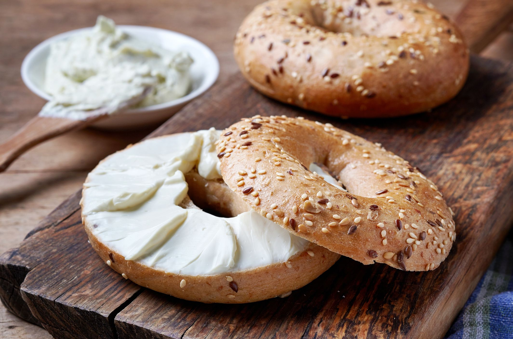

Bagel with Cream Cheese

Description
Classics are classics for a reason. A warm toasty bagel with rich cream cheese will start your day off right!
Ingredients
- 1 bagel, any variety
- 4 tbsp cream cheese, any variety
Steps
- Slice bagel into two halves.
- Toast bagel on medium setting until golden brown.
- While the bagel is still hot, spread the cream cheese evenly on the open faces of the bagel.
- Assemble the bagel.
- Serve immediately.